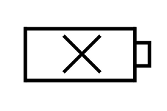
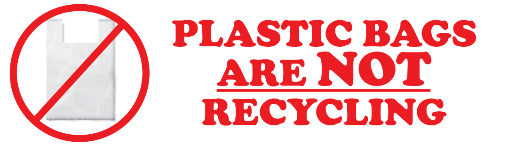
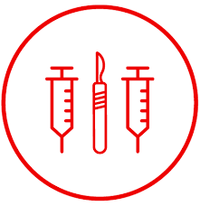

Commercial And Residential, Event Cleanup, Rental Equipment

Batteries, especially the lithium-ion rechargeable type that come in most portable electronics, pose a very serious fire risk when disposed of improperly. When batteries end up at a trash or recycling facility they often get punctured or crushed, which can damage the separation between the cathode and anode, causing them to catch fire or explode.

Plastic bags are inherently difficult to keep free of contaminants and to pull out of the recycling without snagging something else along with them. It is because of these properties that they are the biggest cause of contaminants in our commingled recycling.

Sharps materials, such as syringes, may be disposed of as household trash if special procedures are followed. Sharps should be disposed of in one of the following:
Commercially available rigid plastic sharps container,
Plastic laundry detergent bottle with lid taped shut,
Plastic bleach bottle with lid taped shut,
Other types of medical waste may not be disposed of with household trash.